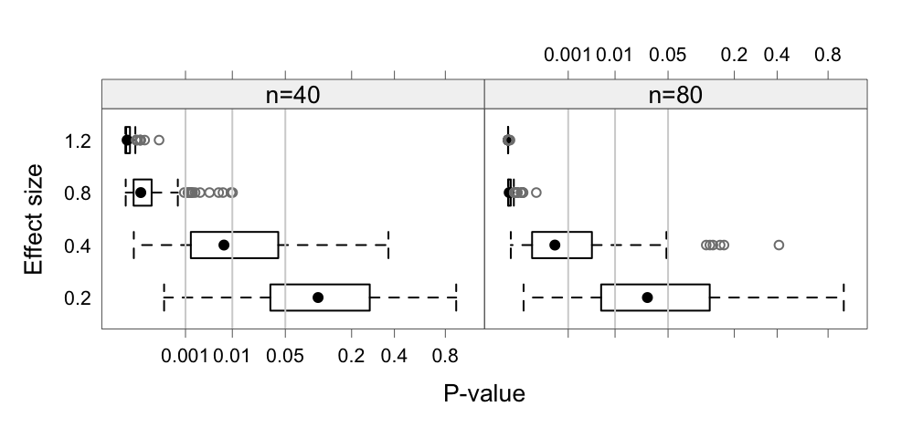

eff and - sample sizes n. The \(p^{0.25}\) scale on the \(x\)-axis is used - to reduce the extreme asymmetry in the distributions.
John Maindonald
July 15, 2024
Bayes Factors give a data analysis perspective that is different to that given by \(p\)-values, one that is in most cases closer to what the analyst would like to know. The value obtained depends, inevitably, on the choice of prior. But, what choice of prior makes good sense? Intuition, if it is to help, requires training. How do Bayes Factors with common choices of prior, stack up against the use of the information statistics BIC (Bayes Information Criterion) and AIC (Akaike Information Criterion) for use in model choice? Intuition, if it is to be useful at all, requires training. The discussion that follows may be helpful to this end.
For purposes of making a connection to the BIC and AIC, the focus will be on Bayes Factors as returned by functions in the BayesFactor package and, by BPpack::BF(). The BIC, in the large sample context for which it was developed, has a direct connection to a form of Bayes Factor. For the AIC, or the AICc that should replace it for use when the ratio of sample size to number of parameters estimated is less than perhaps 40, a more tenuous connection can be made. See Bayarri et al (2012) for commentary on the rational for the Jeffreys-Zellner-Siow family of priors that is used by BayesFactor functions.
The AIC penalty term is designed so that, in the large sample limit, the statistic will select the model with the lowest prediction error. The BIC penalty term is designed, in the large sample limit, to select the correct model. In practical use, this distinction may be somewhat artificial.
eff and - sample sizes n. The \(p^{0.25}\) scale on the \(x\)-axis is used - to reduce the extreme asymmetry in the distributions.
Note first that all these statistics, as well as \(p\)-values, are random variables. The randomness is a particular issue when sample sizes are small and/or effect sizes are small. Figure 1 highlights this point. Code is:
eff2stat <- function(eff=c(.2,.4,.8,1.2), n=c(40,160), numreps=200,
FUN=function(x,N)pt(sqrt(N)*mean(x)/sd(x), df=N-1,
lower.tail=FALSE)){
simStat <- function(eff=c(.2,.4,.8,1.2), N=10, nrep=200, FUN){
num <- N*nrep*length(eff)
array(rnorm(num, mean=eff), dim=c(length(eff),nrep,N)) |>
apply(2:1, FUN, N=N)
}
mat <- matrix(nrow=numreps*length(eff),ncol=length(n))
for(j in 1:length(n)) mat[,j] <-
as.vector(simStat(eff, N=n[j], numreps, FUN=FUN)) ## length(eff)*numep
data.frame(effsize=rep(rep(eff, each=numreps), length(n)),
N=rep(n, each=numreps*length(eff)), stat=as.vector(mat))
}library(lattice)
set.seed(31)
n <- c (40,80)
df200 <- eff2stat(eff=c(.2,.4,.8,1.2), n=n, numreps=200)
labx <- c(0.001,0.01,0.05,0.2,0.4,0.8)
gph <- bwplot(factor(effsize) ~ I(stat^0.25) | factor(N), data=df200,
layout=c(2,1), xlab="P-value", ylab="Effect size",
scales=list(x=list(at=labx^0.25, labels =labx)))
update(gph+latticeExtra::layer(panel.abline(v=labx[1:3]^0.25, col='lightgray')),
strip=strip.custom(factor.levels=paste0("n=", n)),
par.settings=DAAG::DAAGtheme(color=F, col.points="gray50"))As a starting point, comparisons will be for a one-sample \(t\)-statistic.
Given two models with the same outcome variable, with respective BIC (Bayesian Information Criterion) statistics \(m_1\) and \(m_2\), the quantity \[ b_{12} = exp((m_1-m_2)/2) \] can be used as a relative preference statistic for \(m_2\) as against \(m_1\). If model 1 is nested in model 2 this becomes, under what is known as a Jeffreys Unit Information (JUI) prior that is centered on the maximum likelihood of the difference under the alternative, a Bayes Factor giving the probability of model 2 relative to model 1. In the case of a one-sample \(t\)-statistic, the BIC-derived Bayes Factor is \[ \mbox{exp}(N*\log(1+\frac{t^2}{N-1})-\log(N))/2), \mbox{ where }N \mbox{ is the sample size} \]
How does this compare with Bayes Factors that are obtained with other choices of prior? Specifically, because the calculations can then be handled without Markov Chain Monte Carlo simulation, we look at results from functions in the Bayesfactor and BFpack packages.
BayesFactor::ttestBF()Functions in the BayesFactor package assume a Jeffreys-Zellner-Siow (JSZ) prior, which has a reasonable claim to be used as a default prior. Numerical quadrature is used to calculate the Bayes Factor, avoiding the need for Markov Chain Monte Carlo simulation. A Cauchy prior is assumed for the effect size, with the argument rscale giving the scale factor. The Jeffreys distribution has a similar role for the variance of the normal distributions that are assumed both under the null and under the alternative.
# Functions that calculate Bayes Factors or relative preferences
t2BF <- function(p=0.05, N, xrs=1/sqrt(2)){
t <- qt(p/2, df=N-1, lower.tail=FALSE)
BayesFactor::ttest.tstat(t=t, n1=N, rscale=xrs, simple=TRUE)}
t2BFbic <- function(p,N){t <- qt(p/2, df=N-1, lower.tail=FALSE)
exp((N*log(1+t^2/(N-1))-log(N))/2)}
t2AIC <- function(p,N){t <- qt(p/2, df=N-1, lower.tail=FALSE)
exp((N*log(1+t^2/(N-1))-2)/2)}
t2AICc <- function(p,N){t <- qt(p/2, df=N-1, lower.tail=FALSE)
exp((N*log(1+t^2/(N-1))-12/(N-3)+4/(N-2)-2)/2)} ## Requires N > 6
t2eff <- function(p=0.05, N)
eff <- qt(p/2, df=N-1, lower.tail=FALSE)/sqrt(N)pval <- c(.05,.01,.001); np <- length(pval)
Nval <- c(3,4,5,10,20,40,80,160,360); nlen <- length(Nval)
## Bayes Factors, using BayesFactor::ttest.tstat()
rs <- c(1/sqrt(2), sqrt(2))
bf <- matrix(nrow=length(rs)+2,ncol=length(Nval))
dimnames(bf) <-
list(c('rscale=1/sqrt(2)', ' sqrt(2)', 'BIC','Effect size'),
paste0(c("n=",rep("",length(Nval)-1)),Nval))
bfVal <- setNames(rep(list(bf),length(pval)),
paste0('p', substring(paste(pval),2)))
for(k in 1:length(pval)){p <- pval[k]
for(i in 1:length(rs))for(j in 1:nlen)
bfVal[[k]][i,j] <- t2BF(p=p, N=Nval[j], xrs=rs[i])
bfVal[[k]][length(rs)+1,] <- outer(p, Nval, t2BFbic)
bfVal[[k]][length(rs)+2,] <- outer(p, Nval, t2eff)
}
lapply(bfVal, function(x)signif(x,2))$p.05
n=3 4 5 10 20 40 80 160 360
rscale=1/sqrt(2) 2.6 2.4 2.2 1.80 1.40 1.10 0.80 0.59 0.40
sqrt(2) 3.0 2.5 2.1 1.30 0.89 0.62 0.43 0.31 0.20
BIC 19.0 9.6 6.6 3.00 1.80 1.20 0.79 0.55 0.36
Effect size 2.5 1.6 1.2 0.72 0.47 0.32 0.22 0.16 0.10
$p.01
n=3 4 5 10 20 40 80 160 360
rscale=1/sqrt(2) 6.4 7.0 7.0 6.2 5.10 4.10 3.1 2.30 1.60
sqrt(2) 9.8 9.6 8.7 5.6 3.70 2.50 1.8 1.20 0.82
BIC 210.0 77.0 45.0 15.0 8.00 5.00 3.3 2.30 1.50
Effect size 5.7 2.9 2.1 1.0 0.64 0.43 0.3 0.21 0.14
$p.001
n=3 4 5 10 20 40 80 160 360
rscale=1/sqrt(2) 21 32.0 38.0 41.0 37.00 31.00 24.00 18.00 13.00
sqrt(2) 39 56.0 60.0 47.0 31.00 21.00 15.00 10.00 6.70
BIC 6500 1600.0 750.0 180.0 77.00 44.00 28.00 19.00 12.00
Effect size 18 6.5 3.9 1.5 0.87 0.56 0.38 0.27 0.17Note two points:
- Not until \(n\)=80 is the BIC-based Bayes Factor in much the same ballpark as the that generated by the BayesFactor function. For smaller values of \(n\), it is overly large. The BIC statistic really is designed for use in a “large sample” context.
- As \(n\) increases, the estimated effect size to which the Bayes Factor corresponds becomes ever smaller.
Note then that BayesFactor::ttestBF() with the default setting of rscale, and the BIC-based Bayes Factor, are both using a prior whose scale is large relative to an ever smaller effect size.
rscale to the effect sizeObserve then the result from matching the scale for the prior to the effect size. The following checks this for \(p\)=0.05, making at the same time a comparison with AIC-based and BIC-based relative ‘preferences’.
rs <- c(0.5,1,4,16)
pval <- 0.05
BFrs <- matrix(nrow=length(rs)+3, ncol=nlen)
dimnames(BFrs) <-
list(c(paste0(c("rscale=",rep(" ",3)),rs,"/sqrt(n)"),
"rscale=1/sqrt(2)","BIC-based","AIC-based"),
paste0(c("n=",rep("",nlen-1)),Nval))
for(j in 1:nlen){
for(i in 1:length(rs))
BFrs[i,j] <- t2BF(p=pval, N=Nval[j], xrs=rs[i]/sqrt(Nval[j]))
BFrs[length(rs)+1, j] <- t2BF(p=pval, N=Nval[j], xrs=1/sqrt(2))
BFrs[length(rs)+2, j] <- t2BFbic(p=pval, N=Nval[j])
BFrs[length(rs)+3, j] <- t2AIC(p=pval, N=Nval[j])
}
print(setNames("p=0.05",""), quote=F)
p=0.05 n=3 4 5 10 20 40 80 160 360
rscale=0.5/sqrt(n) 1.84 1.77 1.71 1.59 1.53 1.50 1.48 1.48 1.47
1/sqrt(n) 2.38 2.19 2.06 1.81 1.70 1.65 1.62 1.61 1.60
4/sqrt(n) 3.02 2.28 1.92 1.41 1.22 1.15 1.11 1.10 1.09
16/sqrt(n) 1.48 0.91 0.70 0.46 0.39 0.36 0.35 0.34 0.34
rscale=1/sqrt(2) 2.56 2.38 2.22 1.76 1.39 1.07 0.80 0.59 0.40
BIC-based 18.96 9.57 6.56 3.00 1.78 1.16 0.79 0.55 0.36
AIC-based 12.08 7.04 5.39 3.49 2.93 2.71 2.60 2.56 2.53The BIC is designed, in effect, to look for effect sizes that are around one. If a small effect size is expected in a large sample context, use of ttestBF() or ttest.tstat() with a setting of rscale that matches the expected effect size, makes better sense than use of BIC().
There is a choice of prior that allows the AIC-based preference measure to be interpreted as a Bayes Factor. See Burnham & Anderson (2004). Relative preference values that are larger than from the BayesFactor functions at all settings of rscale suggests a tendency to choose an overly complex model.
For \(p\)=0.01 we find:
rs <- c(0.5,1,4,16)
pval <- 0.01
BFrs <- matrix(nrow=length(rs)+3, ncol=nlen)
dimnames(BFrs) <-
list(c(paste0(c("rscale=",rep(" ",3)),rs,"/sqrt(n)"),"rscale=1/sqrt(2)","BIC-based","AIC-based"), paste0(c("n=",rep("",nlen-1)),Nval))
for(j in 1:nlen){
for(i in 1:length(rs))
BFrs[i,j] <- t2BF(p=pval, N=Nval[j], xrs=rs[i]/sqrt(Nval[j]))
BFrs[length(rs)+1, j] <- t2BF(p=pval, N=Nval[j], xrs=1/sqrt(2))
BFrs[length(rs)+2, j] <- t2BFbic(p=pval, N=Nval[j])
BFrs[length(rs)+3, j] <- t2AIC(p=pval, N=Nval[j])
}
p=0.01 n=3 4 5 10 20 40 80 160 360
rscale=0.5/sqrt(n) 3.49 3.65 3.62 3.38 3.22 3.13 3.09 3.07 3.06
1/sqrt(n) 5.56 5.71 5.54 4.87 4.48 4.28 4.19 4.14 4.12
4/sqrt(n) 12.32 10.39 8.77 5.85 4.75 4.30 4.09 3.99 3.94
16/sqrt(n) 12.09 6.54 4.51 2.31 1.73 1.51 1.42 1.38 1.35
rscale=1/sqrt(2) 6.38 7.03 7.05 6.20 5.12 4.08 3.12 2.32 1.60
BIC-based 205.66 76.53 44.54 15.34 8.04 4.96 3.29 2.25 1.47
AIC-based 131.05 56.31 36.64 17.84 13.23 11.54 10.81 10.47 10.29We ask “For what \(p\)-value does the statistic, in either case, rate the simpler model and the more complex model equally?”
eqAIC2p <- function(n)2*pt(sqrt((n-1)*(exp(2/n)-1)),lower.tail=F,df=n-1)
eqBIC2p <- function(n)2*pt(sqrt((n-1)*(exp(log(n)/n)-1)),lower.tail=F,df=n-1)
eqAICc2p <- function(n){penalty <- 12/(n-3)-4/(n-2)+2;
2*pt(sqrt((n-1)*(exp(penalty/n)-1)),lower.tail=F,df=n-1)}
eq2p <- rbind(BIC=setNames(eqBIC2p(Nval[-1]), paste(Nval[-1])),
AIC=eqAIC2p(Nval[-1]), AICc=eqAICc2p(Nval[-1]))
signif(eq2p,2) 4 5 10 20 40 80 160 360
BIC 0.3500 0.290 0.160 0.096 0.06 0.038 0.025 0.015
AIC 0.2600 0.230 0.190 0.170 0.17 0.160 0.160 0.160
AICc 0.0048 0.029 0.098 0.130 0.14 0.150 0.150 0.160We investigate the Bayes Factors that are calculated using the Fractional Bayes Factor Approach. The details are not easy to describe simply. However the effect is that allowance must be made for the use of a fraction of the information in the data to determine the null. See Mulder et al (2021).
We compare
BF.type=1), i.e., the prior is centered on the NULLBF.type=2), i.e., the prior is centered on the maximum likelihood estimate under the alternative.suppressPackageStartupMessages(library(BayesFactor))
suppressPackageStartupMessages(library(BFpack))
suppressPackageStartupMessages(library(metRology))
pval <- c(.05,.01,.001); np <- length(pval)
Nval <- c(3:5,10,20,40,80,160,320); nlen <- length(Nval)
bicVal <- outer(pval, Nval, t2BFbic)
# t2BF <- function(p, N){t <- qt(p/2, df=N-1, lower.tail=FALSE)
# BayesFactor::ttest.tstat(t=t, n1=N, simple=TRUE)}
BFval <- packValNull <- packValAlt <- matrix(nrow=np,ncol=nlen)
dimnames(packValNull) <- dimnames(packValAlt) <- dimnames(bicVal) <-
dimnames(BFval) <-
list(paste(pval), paste0(c("n=",rep("",nlen-1)),Nval))
for(i in 1:np)for(j in 1:nlen){
t <- qt(pval[i]/2,Nval[j]-1,lower.tail=F)
d <- rnorm(Nval[j])
d <- d-mean(d)+t*sd(d)/sqrt(Nval[j])
tt <- bain::t_test(d)
packValNull[i,j] <- BF(tt, hypothesis='mu=0',
BF.type=1)[['BFmatrix_confirmatory']]['complement', 'mu=0']
packValAlt[i,j] <- BF(tt, hypothesis='mu=0',
BF.type=2)[['BFmatrix_confirmatory']]['complement', 'mu=0']
BFval[i,j] <- t2BF(pval[i], Nval[j])}
Fractional Bayes Factor, center prior on null n=3 4 5 10 20 40 80 160 320
0.05 2.04 2.19 2.13 1.66 1.20 0.856 0.607 0.43 0.304
0.01 4.51 6.19 6.71 6.10 4.66 3.395 2.432 1.73 1.227
0.001 14.24 28.34 36.64 42.93 35.65 26.849 19.520 13.98 9.951
From `BayesFactor::ttestBF()`, center prior on null n=3 4 5 10 20 40 80 160 320
0.05 2.56 2.38 2.22 1.76 1.39 1.07 0.80 0.585 0.422
0.01 6.38 7.03 7.05 6.20 5.12 4.08 3.12 2.321 1.688
0.001 21.44 32.35 37.65 40.86 36.57 30.53 24.19 18.364 13.527
FBF, center prior on null: Ratio to BayesFactor result n=3 4 5 10 20 40 80 160 320
0.05 0.797 0.919 0.958 0.939 0.864 0.800 0.759 0.734 0.721
0.01 0.708 0.880 0.952 0.984 0.910 0.833 0.778 0.745 0.727
0.001 0.664 0.876 0.973 1.050 0.975 0.879 0.807 0.761 0.736BFpack::BF() with BF.type=2 vs derived from BIC
FBF, center on estimate under alternative n=3 4 5 10 20 40 80 160 320
0.05 20.9 9.57 6.22 2.6 1.48 0.946 0.638 0.441 0.308
0.01 226.8 76.53 42.27 13.3 6.67 4.033 2.647 1.804 1.253
0.001 7123.0 1606.11 715.79 151.9 63.95 35.565 22.407 14.973 10.295
Derived from BIC n=3 4 5 10 20 40 80 160 320
0.05 19 9.57 6.56 3.0 1.78 1.16 0.792 0.55 0.385
0.01 206 76.53 44.54 15.3 8.04 4.96 3.286 2.25 1.567
0.001 6460 1606.11 754.24 175.7 77.10 43.73 27.819 18.68 12.872
FBF, center prior on alternative: Ratio to BIC n=3 4 5 10 20 40 80 160 320
0.05 1.1 1 0.949 0.865 0.829 0.813 0.805 0.802 0.8
0.01 1.1 1 0.949 0.865 0.829 0.813 0.805 0.802 0.8
0.001 1.1 1 0.949 0.865 0.829 0.813 0.805 0.802 0.8The function BFpack::BF() is making allowance for the use of a fraction of the information in the data used to specify the prior distribution. The BIC based calculations do not make such an adjustment.
As for the use of the BIC to choose between a simpler and a more complex model, the calculated Bayes Factors are unreasonably large for small samples, while in larger samples the prior is tuned to detect effect sizes that are of similar (or larger) magnitude than the standard deviation.
Figure 2 summarizes the comparisons made
Code is:
library(lattice)
allVal <- rbind(BFval, packValNull, bicVal, packValAlt)
rownames(allVal) <- paste0(
rep(c('BayesFactor', 'packValNull', 'BIC', 'packValAlt'), c(3,3,3,3)),
rep(c(".05",".01",".001"), 4))
tdf <- as.data.frame(t(allVal))
tdf$n <- Nval
labs <- sort(c(2^(0:6),2^(0:6)*1.5))
xyplot(BayesFactor.05+packValNull.05+BIC.05+packValAlt.05 ~ n,
data=tdf, type='l', auto.key=list(columns=2),
xlab="Sample size $n$",
ylab="Bayes Factor (Choice of 4 possibilities)",
scales=list(x=list(at=(0:8)*40),
y=list(log=T, at=labs, labels=paste(labs))),
par.settings=simpleTheme(lty=c(1,1:3), lwd=2, col=rep(c('gray','black'), c(1,3))))We will work with data simulated from a model of the form
\[ y = a_1 x_1 + a_2 x_2 + \epsilon, \] where \(\epsilon\) is normally distributed with mean 0 and variance \(\sigma^2\).
The following function creates simulated data:
It can suitably be used thus:
Estimate Std. Error t value Pr(>|t|)
(Intercept) -8.553311 9.8363109 -0.8695649 0.385865705
x1 1.214061 0.6201538 1.9576765 0.052040933
x2 1.863687 0.6201538 3.0052006 0.003090532lmBF()This function returns the Bayes Factors for individual linear models against the intercept only model as the null. A comparison other than against the intercept only model require one call to lmBF() for each model, then using the ratio of the two Bayes Factors to compare the models. For obtaining multiple Bayes Factors that relate to the one model, the function regressionBF() that is demonstrated below may be preferred.
bf error time code
x1 0.07403776 3.405148e-05 Tue Jul 23 20:40:55 2024 12eaa77496becNote that in terms such as y.lmBF1/y.lmBF12, the ‘full’ model has to appear as the denominator. To obtain the Bayes Factors for y~x1+x2 against y~x1 (i.e. ‘Omit x2’), which is the Bayes Factor for x2 given x1, use the construction:
The following shows the two Bayes Factors, for x2 given x1, and for x1 given x2, side by side:
regressionBF()The function regressionBF() calculates Bayes Factors, either for all model terms (specify whichModels='all') or for all single term deletions (specify whichModels='top'), in either case against the intercept only model as the null. Again use extractBF() to get output in terse summary form:
bf error time code
x1 0.896133 3.379620e-05 Tue Jul 23 20:40:55 2024 12eaa908962c
x2 9.408323 2.142530e-05 Tue Jul 23 20:40:55 2024 12eaa12bb2756
x1 + x2 12.103729 4.161742e-06 Tue Jul 23 20:40:55 2024 12eaa3d1388b5Now use regressionBF() with the argument whichModels='top'. Use extractBF() to omit the final line that shows 1.0 as the Bayes Factor for the full model against itself:
bf error time code
x1 0.07403776 3.405148e-05 Tue Jul 23 20:40:55 2024 12eaa59d3e894
x2 0.77730783 2.182576e-05 Tue Jul 23 20:40:55 2024 12eaa674a7a9eIt may seem more natural to work for the inverses of the Bayes Factors that are shown. These can be obtained in either of the following ways:
returned, here obtaining the Bayes Factors for x2 given x1, and for x1 given x2, as against the model y~x1+x2. This does however give very large Bayes Factors when \(p\)-values are very small. The very small Bayes Factors that are their inverses may be easier to work with.
With the default settings, the simulated data and statistics in the fitted model show, even in medium size datasets such as here with \(n\)=80, large variation from one simulation to the next:
Ten simulations give \(p\)-values, estimated coefficients (expected values are b1=1.2 and b2=1.5), and Bayes Factors against the model that includes both x1 and x2, thus:
multsim <- function(N=80, b1=1.25, b2=1.2, sd=4, num=20, nsim=10){
x1 <- seq(from=1, to=min(num,N), length.out=N)/5
x2 <- sample(x1)
stats <- matrix(nrow=8, ncol=nsim)
for(i in 1:nsim){
n <- length(x1)
dat <- data.frame(x1=x1, x2=x2, y=b1*x1+b2*x2+rnorm(n,sd=sd))
y.lm <- lm(y~x1+x2, data=dat)
c1c4 <- coef(summary(y.lm))[2:3, c(1,4)]
lm1 <- lm(y~x1, data=dat)
lm2 <- lm(y~x2, data=dat)
lm12 <- lm(y~x1+x2, data=dat)
stats[1:6, i] <- c(c1c4[,1], c1c4[,2],
1/extractBF(regressionBF(y ~ x1+x2, data=dat, whichModels='top'))$bf[2:1])
stats[7:8,i] <- c(exp((BIC(lm2)-BIC(lm12))/2), exp((BIC(lm1)-BIC(lm12))/2))
}
rownames(stats) <- c('b1','b2','p1','p2', 'bf1','bf2', 'bf1-BIC','bf2-BIC')
stats
}
set.seed(17)
stats <- multsim()
stats |> round(3) [,1] [,2] [,3] [,4] [,5] [,6] [,7] [,8] [,9] [,10]
b1 1.321 1.455 1.485 1.614 0.823 0.858 1.819 1.138 1.151 1.685
b2 0.575 1.096 0.893 1.220 1.593 1.397 0.338 1.103 1.046 0.340
p1 0.001 0.000 0.001 0.001 0.043 0.067 0.000 0.005 0.004 0.000
p2 0.150 0.006 0.043 0.014 0.000 0.003 0.450 0.006 0.009 0.409
bf1 29.247 92.644 35.210 27.357 1.473 1.162 244.210 9.637 10.350 270.895
bf2 0.632 7.514 1.541 3.764 181.749 13.297 0.297 7.753 5.506 0.311
bf1-BIC 24.894 95.848 31.273 23.816 0.955 0.649 285.874 7.356 7.907 321.521
bf2-BIC 0.330 5.945 0.942 2.608 202.431 10.120 0.151 5.770 3.905 0.160Observe that the BIC-based factors are in most cases substantially less favorable than the Bayes Factors from regressionBF() to the model that has both of the explanatory variables. This remains the case even for a much larger sample size. Thus, try:
Now create a simulated dataset, and calculate Bayes Factors for the coefficients (1) using Bayesfactor functions, and (2) derived from BIC statistics:
simDat <-
function(x1=rep(1:20,4)/5, x2=sample(rep(1:20,4)/5),
b1=1.2, b2=1.5, sd=8){
n <- length(x1)
data.frame(x1=x1, x2=x2, y=b1*x1+b2*x2+rnorm(n,sd=sd))
}
library(AICcmodavg)
set.seed(31)
dat31 <- simDat()
y0.lm <- lm(y~0, data=dat31)
y.lm <- lm(y~x1+x2, data=dat31); bf12 <- lmBF(y ~ x1+x2, data=dat31)
y2.lm <- lm(y~x2, data=dat31); bf2 <- lmBF(y ~ x2, data=dat31)
y1.lm <- lm(y~x1, data=dat31); bf1 <- lmBF(y ~ x1, data=dat31)
## Regression summary
coef(summary(y.lm)) |> signif(2) Estimate Std. Error t value Pr(>|t|)
(Intercept) 1.20 2.2 0.55 0.590
x1 0.99 0.7 1.40 0.160
x2 1.80 0.7 2.50 0.014## Bayes Factors for x1 and x2, using functions from _Bayesfactor_
BF <- c(extractBF(bf12/bf2)$bf, extractBF(bf12/bf1)$bf)
## Bayes Factors for x1 and x2, derived from BIC statistics
BICbf <- c(exp((BIC(y2.lm)-BIC(y.lm))/2), exp((BIC(y1.lm)-BIC(y.lm))/2))
## Bayes Factors for x1 and x2, derived from AIC statistics
AICrp <- c(exp((AIC(y2.lm)-AIC(y.lm))/2), exp((AIC(y1.lm)-AIC(y.lm))/2))
## Bayes Factors for x1 and x2, derived from AICc statistics
AICcRP <- c(exp((AICc(y2.lm)-AICc(y.lm))/2), exp((AICc(y1.lm)-AICc(y.lm))/2)) |> round(2)
## Bayes Factors for x1 and x2, derived from BIC ratio of ratios to null model
stats <- cbind(BF=BF, BICbf=BICbf, AICrp=AICrp, AICcRP=AICcRP)Relative preference statistics in favor of including both x1 and x2, are:
The BIC-based statistics are substantially smaller, and the AIC and AICc-based statistics substantially larger, than those derived from calculations using BayesFactor::lmBF().
rscaleContThe following code will be used for the calculations:
simReg <- function(N=160, b1=1.2, b2=1.25, sd=40, num=20){
x1 <- seq(from=1, to=min(num,N), length.out=N)
x2 <- sample(x1)
df <- data.frame(x1=x1, x2=x2, y=b1*x1+b2*x2+rnorm(min(num,N),sd=sd))
}
tuneReg <- function(p=0.01, data){
reg <- lm(y ~ x1+x2, data=data)
N <- nrow(data)
tstats <- coef(summary(reg))[,'t value']
tfix <- qt(1-p/2, df=N-3, lower.tail=F)
y1 <- fitted(reg)+resid(reg)*tstats[2]/tfix
y2 <- fitted(reg)+resid(reg)*tstats[3]/tfix
cbind(dat, y1=y1, y2=y2)
}rscaleCF <- function(data=dat, rs=seq(from=0.04, to=0.16, by=0.05)){
colnam <- as.character(substitute(rs))
if(colnam[1]=="c")colnam <- colnam[-1] else colnam <- paste(rs)
bfVal <- matrix(nrow=3, ncol=length(colnam))
dimnames(bfVal) <- list("BFvsInterceptOnly"=c('x1','x2','x1+x2'),
rscaleCont=colnam)
for(i in 1:length(rs)){
reg <- regressionBF(y1~x1+x2, data=data, rscaleCont=rs[i])
bfVal[,i] <- extractBF(reg)$bf
}
bfVal
}set.seed(53)
dat <- simReg(N=80, sd=28)
dat80 <- tuneReg(p=0.01, data=dat)
coef(summary(lm(y1~x1+x2, data=dat80)))[2:3,4, drop=F] |> round(3)
bfVal80a <- rscaleCF(data=dat80, rs=c(.22, .31, sqrt(2)/4))
bfVal80omit <- apply(bfVal80a, 2, function(x)x[3]/x[-3])
dimnames(bfVal80omit) <- list('x1+x2 vs'=c('Omit x2','Omit x1'),
rscaleCont=dimnames(bfVal80a)[[2]])
set.seed(53)
dat <- simReg(N=160, sd=40)
dat160 <- tuneReg(p=0.01, data=dat)
bfVal160a<- rscaleCF(data=dat160, rs=c(.26,.154,sqrt(2)/4))
bfVal160omit <- apply(bfVal160a, 2, function(x)x[3]/x[-3])
dimnames(bfVal160omit) <- list('x1+x2 vs'=c('Omit x2','Omit x1'),
rscaleCont=dimnames(bfVal160a)[[2]])In the following, the first column shows the value of rscaleCont for the maximum Bayes Factor when x2 is omitted (i.e., only x1 left), and the second column when x1 is omitted.
rscaleCont
x1+x2 vs 0.22 0.31 sqrt(2)/4
Omit x2 2.980 2.922 2.857
Omit x1 5.516 5.693 5.662For `dat160’, we see
rscaleCont
x1+x2 vs 0.26 0.154 sqrt(2)/4
Omit x2 24.741 22.994 24.242
Omit x1 5.136 5.329 4.772Notice that, in both cases, the Bayes Factors for the default setting of rscaleCont lie, for both variables, between that for the ‘Omit x2’ maximum and that for the ‘Omit x1’ maximum.
In this context, the smaller Bayes Factor is modestly increased, with the larger Bayes Factor slightly reduced. The full model (y1 ~ x1+x2) and the models obtained by leaving out x2 (x1 is retained) or x1 (x2 is retained), are both affected in much the same way by changes in rscaleConf.
Bayes Factors are at best a rough measure of model preference, to be used alongside other measures of model preference. The value obtained depends both on the choice of prior on where the prior is centered, and on the choice of scale for the prior. Different choices can lead to quite different Bayes Factors.
Note also that when samples are small, different samples from the same population, if available, will give widely varying summary statistics. Refer back to Figure 1, which showed what could be expected for \(p\)-values.
The comparisons could usefully be extended to consider other choices of prior.
rscaleConf value that makes Bayes Factor a maximumBayarri, M. J., Berger, J. O., Forte, A., & García-Donato, G. (2012). Criteria for Bayesian model choice with application to variable selection.
Burnham, K. P., & Anderson, D. R. (2004). Multimodel inference: understanding AIC and BIC in model selection. Sociological methods & research, 33(2), 261-304.
Mulder, J., Williams, D. R., Gu, X., Tomarken, A., Böing-Messing, F., Olsson-Collentine, A., Meijerink-Bosman, M., Menke, J., van Aert, R., Fox, J.-P., Hoijtink, H., Rosseel, Y., Wagenmakers, E.-J., & van Lissa, C. (2021). BFpack: Flexible Bayes Factor Testing of Scientific Theories in R. Journal of Statistical Software, 100(18), 1–63. https://doi.org/10.18637/jss.v100.i18